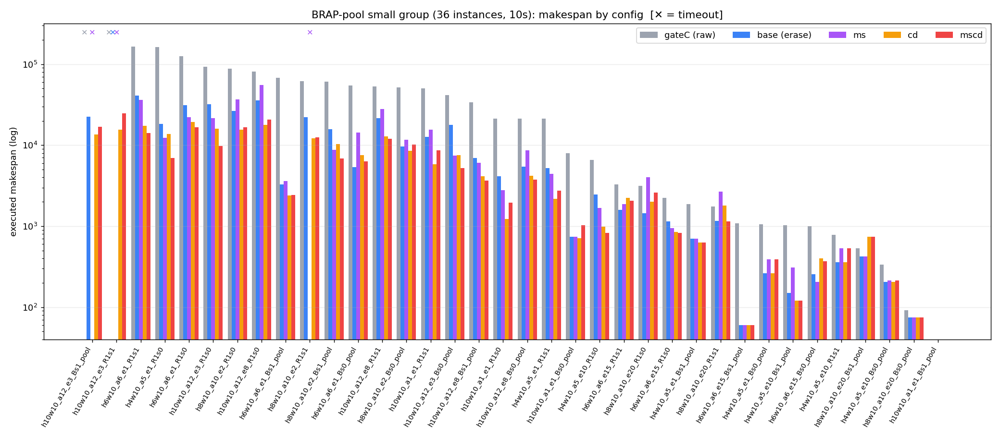
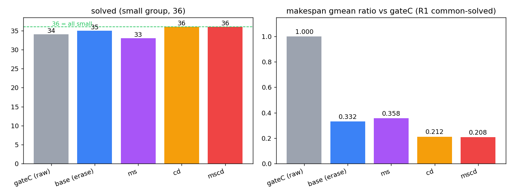
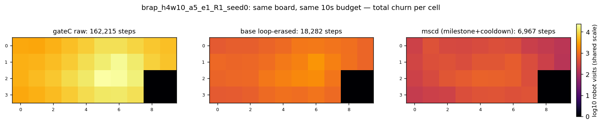

carrier-LaCAM 病根 1-4 修复 — benchmark 可视化（2026-09-01）
68 实例 BRAP-pool，10s/实例，jobs=14。数据：benchmark/results_fix1_*/rows.csv；报告：report.md 第 9 部分。
Warehouse-block testcase 样例（2026-09-03）
最新：Task-BR-PIBT 最终报告（2026-09-03）
v4.1 final7 小图覆盖率与质量（2026-09-02）
交互式动画（旗舰实例 h4w10_a5_e1_R1_seed0，原始 162,215 步）
1. 逐实例 makespan（36 小图实例，对数轴，✕=超时）

2. 解出率 + makespan 几何均值比（vs gateC 冻结基线）

3. 机器人到访热图（同板同预算，共享色标——"醉汉游走"被压掉两个数量级）
